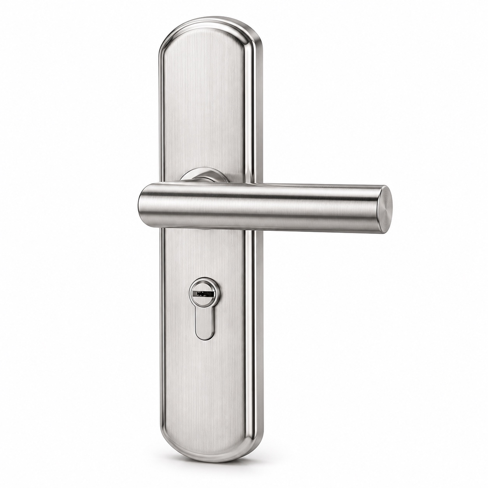

01
含上门拆装
图片仅供参考 产品以实物为准不换智能锁，也能换新好用
室内门、入户防盗门，按门的位置，选一套品质整锁。
自如业主专享 ¥360起含物料·上门·拆装
三款服务价均含物料、上门费、拆装费。
整锁换装，费用看明白
对应整锁方案及配套部件。
上门进行门锁拆装服务。
拆除旧锁，安装新锁。
服务流程
选好产品，确认安装条件，再按流程安排上门与验收。
选择智能门锁换新，或品质机械门锁拆装方案。
对接产品款式与服务需求，明确后续安排。
核对门体、开孔和开向；智能门锁同时确认配网与账号使用条件。
通过对接人员提供的小程序二维码，确认订单后支付定金。
完成旧锁拆除与新锁安装；智能门锁完成配网，机械门锁完成安装调试。
智能锁验收开门、联网及 App 账号管理；机械锁验收开关门和钥匙使用。
现场验收确认、服务完成后，按小程序订单支付尾款。
定金与尾款金额、上门及服务安排，以 VIP 专群对接和小程序订单确认为准。
室内门整锁
图片为所提供的款式与安装效果参考；具体款式、配件及门体适配，服务前确认。
防盗门B级整锁
图片为所提供的款式与安装效果参考；具体款式、配件及门体适配，服务前确认。
防盗门C级整锁
图片为所提供的款式与安装效果参考；具体款式、配件及门体适配，服务前确认。
卧室、书房等室内门先看室内门整锁；入户防盗门可按需求选择B级或C级整锁。服务前需核对门体、锁体与开孔适配。
三个服务价格均包含对应门锁物料、上门费、旧锁拆除及新锁安装费。先明确所选整锁方案与门体适配，再安排服务。
图片为依据参考资料处理的产品展示示意图，仅供参考，产品以实物为准。具体款式、颜色及配件以服务前确认的实际供货与适配方案为准。
可切换到“自如智能门锁无忧换新”，查看三款智能门锁。查看智能门锁换新 →